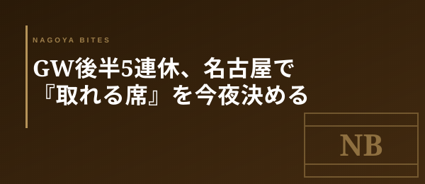

GW本番短信
GW後半5連休、名古屋で『取れる席』を今夜決める
5/1金曜の今夜から、明日5/2土曜・そして5/3〜5/6の4連休。名古屋の予約困難店は明日朝には埋まりきる。業界人が今夜のうちに片付けておく『後半戦の段取り』を共有する。

この記事はNAGOYA BITES — 名古屋の厳選1,100店超を業界視点で紹介するグルメガイドの一部です。
5/3〜5/6で何が起きるか
名古屋の人気店が一斉に観光モードへ入る。新幹線で来る東京・大阪客、レンタカーで来る東海3県外の家族連れ、ともに夕方17時台と20時台に予約が集中する仕様だ。普段18時半が看板だった居酒屋も、5/3〜5/5は2回転前提でラストオーダー21時に切り替える店が増える。客単価8,000円〜12,000円帯のコース型店舗ほどこの傾向が顕著で、当日電話で『すみません満席で』と断る運用に切り替わる。
今夜・明日朝までにやる3手
第一に、5/3〜5/5の予約は今夜のうちに2軒押さえる。第一希望が埋まっていても、第二・第三希望は5/1金曜の22時時点だとまだ枠が残っている。第二に、5/6火曜の夜は『観光客が帰路につく日』なので意外と空きが出る——本命を5/6に振り直すのも手だ。第三に、ランチを攻めるなら11時開店ぴったりに入る。栄・名古屋駅の人気和食ランチは2,500円〜4,500円帯で、12時を過ぎると待ちが出る。
混む店・空く店の見分け方
『観光客向けに名前が知られている』『LCC観光ガイドで上位』『個室が3室以上ある』——この3条件のうち2つ該当する店は5/3〜5/5は当日不可と思っていい。逆に、カウンター8席・予約は電話のみ・SNS露出が少ない、という条件が揃った業界人御用達の隠れ家系は、観光客の射程外なので意外と取れる。名古屋駅から地下鉄で2駅以上離れた住宅街の店、覚王山・池下・新栄あたりは穴場として機能する。家族連れと観光客の動線が栄・名古屋駅に集中する分、地元客の聖域が浮かび上がる4日間でもある。
Inside Perspective — 業界人の目利き
- 5/3〜5/5は17時台と20時台に予約が集中。客単価8,000〜12,000円帯ほど『当日満席運用』に切り替わる
- 第二・第三希望は5/1金曜22時時点ならまだ枠が残る。今夜のうちに2軒押さえるのが業界人の段取り
- 観光客の射程外（カウンター主体・電話予約のみ・住宅街立地）は4連休中も意外と取れる聖域として機能する